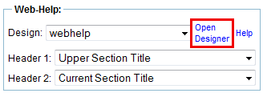

1.13.12. Customizing the Web-Help design
The Web-Help output has the same output options as static HTML export:
Figure 1.13.82. Web-Help output options
Notes:
- The "Single File" output option is currently not supported for Web-Help output.
- The "Header (content alias)" option is not available for Web-Help v1. If you need to set a content header, you have to switch to Web-Help v2.
The "Web-Help - Design" field allows to select one of the installed Web-Help designs. For newly created products, Docmenta stores a default Web-Help design in the product tree. The default design is located at
If the default design does not fully fit your needs, you can create your own Web-Help design using the WebHelp-Designer application as described below. The WebHelp-Designer allows to customize a design by replacing images, changing the sizes, positions and colors of elements, as well as defining background-images and border-lines.
Using the WebHelp-Designer
You can open the WebHelp-Designer by clicking on the "Open Designer" button on the HTML settings panel of the output configurations:

Figure 1.13.83. "Open Designer" button
Alternatively you can open a new Browser-Window and enter the URL
http://<servername>:<port>/docmenta/webdesigner
in your Web-Browser, where <servername> is the domain name or IP address of your server and <port> is the port number which was configured during installation (the default port of the bundled Apache Tomcat web-server is 8080). If the Docmenta server is installed locally, then the servername "localhost" or the IP-address "127.0.0.1" can be used to address the local machine. Furthermore, if the web-server is listening on port 80, then the port number can be omitted.
Examples:
| http://localhost:8080/docmenta/webdesigner |
| http://myserver/docmenta/webdesigner |
This will open a log-in dialog:
Figure 1.13.84. WebHelp-Designer Login
Enter your Docmenta username and password and click the "Login" button. Note that you need at least "Administration" or "Edit styles" or "Manage publications" rights to be able to log-in to the designer application.
After successful log-in, you can select one of the pre-installed Web-Help designs from the selection list  .
.
Figure 1.13.85. WebHelp-Designer
Alternatively you can create a new Web-Help design by clicking the "New" button  .This opens a dialog where you have to enter the name of the design and select one of the installed Web-Help layouts:
.This opens a dialog where you have to enter the name of the design and select one of the installed Web-Help layouts:
Figure 1.13.86. New design dialog
Docmenta includes two pre-installed layouts called "classic" and "slim". The layout defines the overall structure of the Web-Help pages. For example, the "classic"-layout has a header-bar which fills the complete width of the window, whereas the header-bar of the "slim"-layout has the same width as the navigation-panel. You can view the pre-installed example-designs "classic_example1" and "slim_example1" to see the difference of both layouts. If the existing layouts do not fit your needs, you may create your own layout. This is described in the section Section 1.13.13, “Creating a new Web-Help layout” (this requires some CSS knowledge).
After having selected a design from the selection list , the preview-area shows an example-publication formatted with the currently selected design. Furthermore, the left-side panel shows several tabs. Each tab contains controls to update the settings of the currently selected design.
If design-settings are changed, the preview-area automatically reflects the updated settings. However, sometimes the automatic update of the preview-area fails, and the "Refresh Preview" button  needs to be clicked to force a refresh of the preview-area.
needs to be clicked to force a refresh of the preview-area.
To save the modified settings, click the "Save" button  . To save the settings as a new design, click the "Save as..." button
. To save the settings as a new design, click the "Save as..." button  and enter a new name. You can delete the currently selected design by clicking the "Delete" button
and enter a new name. You can delete the currently selected design by clicking the "Delete" button  .
.
For Web-Help output, book-parts are rendered as tabs. The "Parts" checkbox  in the top panel allows to preview the Web-Help design with either book-parts included or not. The checkbox "Breadcrumbs" allows to preview the design with either breadcrumbs-navigation enabled or not. Note that whether first level sections are rendered as book-parts or chapters, and whether an exported publication contains a breadcrumbs-navigation or not, is defined by the output configuration.
in the top panel allows to preview the Web-Help design with either book-parts included or not. The checkbox "Breadcrumbs" allows to preview the design with either breadcrumbs-navigation enabled or not. Note that whether first level sections are rendered as book-parts or chapters, and whether an exported publication contains a breadcrumbs-navigation or not, is defined by the output configuration.
To be able to use a design created in the WebHelp-Designer, you first need to export the design and then import it to your product. To export a design, select the design from the selection list and then click "Export"  . This saves the design as a zip-package.
. This saves the design as a zip-package.
An exported Web-Help design can be imported into the WebHelp-Designer by clicking the "Import" button  and selecting the zip file (the name of the zip-file is used as name of the imported design). For example, this can be used to exchange Web-Help designs between different Docmenta installations.
and selecting the zip file (the name of the zip-file is used as name of the imported design). For example, this can be used to exchange Web-Help designs between different Docmenta installations.
Installing a Web-Help design
A Web-Help design is a zip-file that contains a set of images and configuration-files. The easiest way to create a Web-Help design is to use the WebHelp-Designer application as described above. Use the "Export" function of the WebHelp-Designer, to save the selected design as a zip-file.
Important!
Designs created by the WebHelp-Designer are optimized for Web-Help v2 export, i.e. not all features are supported by Web-Help v1.
To install the Web-Help design, the zip-file needs to be uploaded to the following location within the product-tree:
To avoid filename-conflicts, when installing several designs into this folder, each Web-Help design should have a unique name. Normally, a sub-folder named "webhelp" already exists within this folder. This folder contains a default-design that is used, if no other design has been selected in the output-configuration.
Note:
If the product has been created with a Docmenta version before 1.8, then the default-design  System >
System >  HTML customization webhelp is optimized for Web-Help v1 exports. Therefore, for Web-Help v2 exports, it is recommended to add Web-Help designs that have been exported from the WebHelp-Designer application.
HTML customization webhelp is optimized for Web-Help v1 exports. Therefore, for Web-Help v2 exports, it is recommended to add Web-Help designs that have been exported from the WebHelp-Designer application.
If the product has been created with Docmenta version 1.8 or newer, then the default-design System > HTML customization webhelp is already optimized for Web-Help v2 exports.
When uploading the zip-file, you will be asked whether the zip-file shall be extracted or not. You have two possibilities:
- If you do not intend to modify the Web-Help design (e.g. replacing logo images), then do not extract the zip-file (recommended).
- If you intend to further modify the Web-Help design, then you may want to store the Web-Help design extracted. This way you can easily exchange image-files or edit the positioning.css file of the Web-Help design, without having to create and upload a new zip-file.
Important!
When extracting the zip-file, you are asked whether the files shall be extracted into a sub-folder or directly into the selected folder. When uploading a Web-Help design, always choose to extract into a sub-folder! This creates a sub-folder with the name of the zip-file. The content of the zip-file is then extracted into the sub-folder.
After having uploaded the new Web-Help design, open the Web-Help output-configuration and select the new Web-Help design:
Figure 1.13.87. Selecting the Web-Help design
When you export a publication with the changed output-configuration, the publication will be exported with the new Web-Help design.
Replacing the logos
If you have stored the Web-Help design extracted, then it is easy to replace the logo images. To do this, just replace the files with prefix "logo1" and "logo2". Note that you cannot change the format of the images, i.e. the new logos must have the same filename-extension (.png). To avoid alias-name conflicts, it is recommended to append the name of the Web-Help design to the name of images (e.g. logo1_my_design.png).
It is possible to change the size of the header-logos. However, if you use larger/smaller images, it may be necessary to also increase/decrease the height of the header-box, as well as the top-margins of the content-box and the top-positions of some fixed elements (e.g. navigation tabs, breadcrumbs-navigation, and so on). It is recommended to use the WebHelp-Designer application to adapt the design for changed images-sizes.